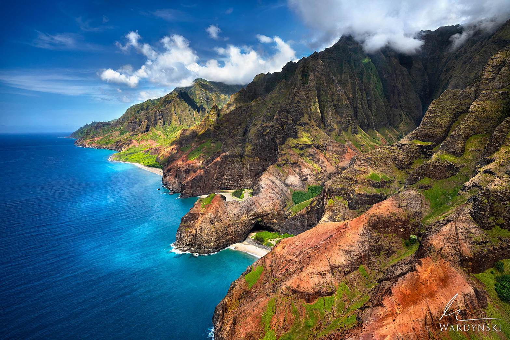
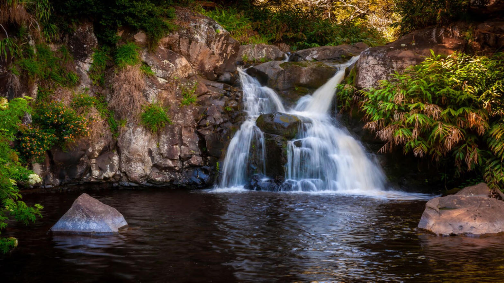
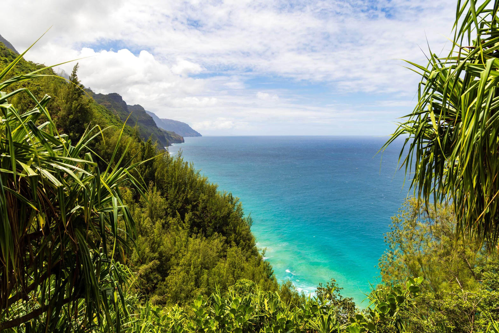
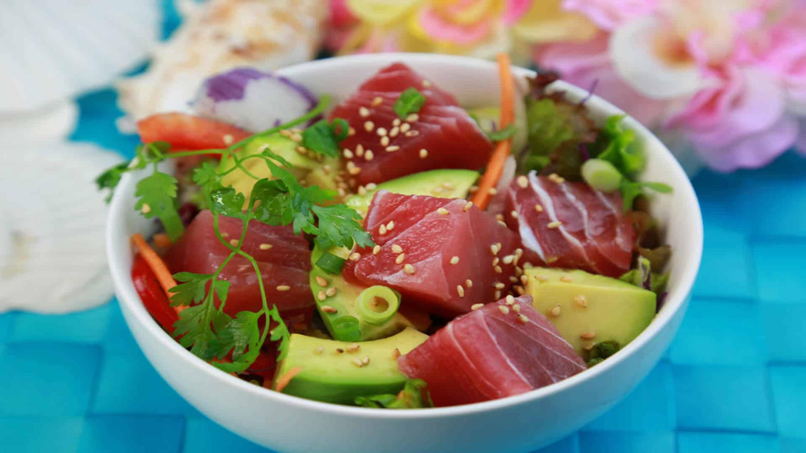

I would go to the island of Kauai in Hawaii, often called the Garden Isle for its lush landscapes. The dramatic Na Pali Coast has towering green cliffs that drop straight into the blue Pacific Ocean. Other highlights include Waimea Canyon, known as the Grand Canyon of the Pacific, and the quiet beaches along the north shore. The remote feel and incredible natural beauty make every view memorable.

Note. From Na Pali Coast [Photograph], by M. Wardynski, n.d., Mike Wardynski Photography (https://www.wardynskiphoto.com/photo/na-pali-coast/).
Here's a list of activities I would love to take part in while in Kauai:

Note. From The Best Waterfall Hikes on Kauai [Photograph], by Parrish Kauai, n.d. (https://www.parrishkauai.com/kauai-activities/waterfall-hikes-kauai/).

Note. From 9 Best Hikes in Kauai for Epic Views, Waterfalls, and Adventure [Photograph], by Explore With Alec, n.d. (https://explorewithalec.com/hikes-in-kauai/).
I would focus on the local cuisine on Kauai, which centers on fresh seafood and tropical ingredients. I would like to try poke, which is diced raw fish mixed with soy sauce, sesame oil, and green onions, often served over rice. Grilled mahi mahi, tropical fruit smoothies, and local coffee grown on the island are also on my list.

Note. From Savory, Fresh, and Hawaiian: The Must-Try Poke of Kauai [Photograph], by Parrish Kauai, n.d. (https://www.parrishkauai.com/kauai-history/poke-kauai/).